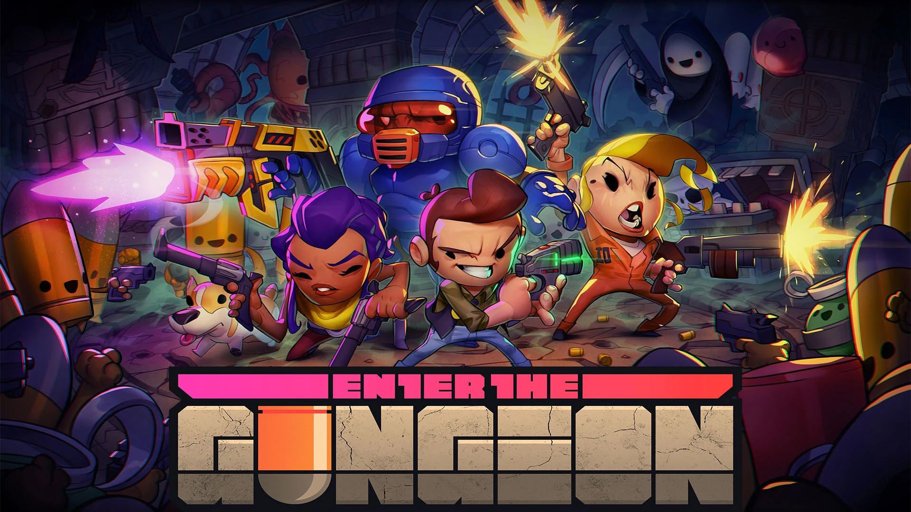
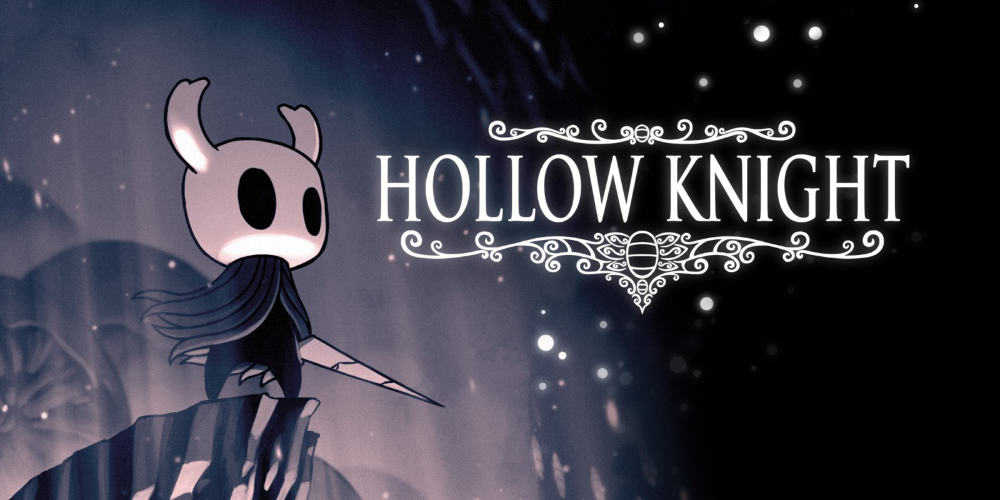

Docentes de literatura e investigadores
Diseñado como una hoja de ruta operativa para educadores de educación secundaria y superior que buscan incorporar la narrativa interactiva mediante marcos rigurosos de interpretación semiótica.
PROPUESTA DIDÁCTICA Y METODOLÓGICA
FUNDAMENTACIÓN
Esta obra sistematiza la deconstrucción analítica de la ficción digital interactiva. Lejos de sustituir el canon tradicional, expande la alfabetización literaria hacia las nuevas ecologías del aprendizaje, abordando el software lúdico como un artefacto cultural complejo donde interactúan mecánicas procedimentales, espacialidad y toma de decisiones.
Diseñado como una hoja de ruta operativa para educadores de educación secundaria y superior que buscan incorporar la narrativa interactiva mediante marcos rigurosos de interpretación semiótica.
El videojuego opera como un espacio donde la fábula no es contemplada pasivamente; se ejecuta a través de las reglas y mecánicas integradas en el código.
Fomenta el desarrollo de inferencias complejas, el mapeo de diagramas actanciales, la lectura del paisaje y la comprensión formal ludonarrativa.
EL MARCO OPERATIVO
Determinación del corpus lúdico en función de las características narrativas (superficial, introspectivo, basado en la literatura), la accesibilidad y las necesidades de los estudiantes.
Fase de lectura o juego. El lectousuario registra cómo el sonido, el entorno, las mecánicas e interfaz condicionan y modifican el relato.
Sistematización analítica de variables formales en la matriz de análisis estructural, por capítulos o por ficción digital de acuerdo a las características de la obra.
Traducción de los datos recogidos hacia el diseño de diagramas lúdicos, debates críticos organizados o producción escrita.
CORPUS ANALÍTICO DEL LIBRO



REPOSITORIO PEDAGÓGICO
Documentación de experiencias de implementación, rúbricas compartidas por profesores y descubrimientos de los estudiantes.
LABORATORIO HERMENÉUTICO VIRTUAL
Herramienta diseñada para el vaciado analítico. Permite estructurar los componentes lúdico-textuales de cualquier obra digital seleccionada para tus clases.